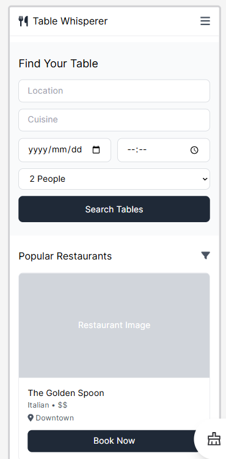
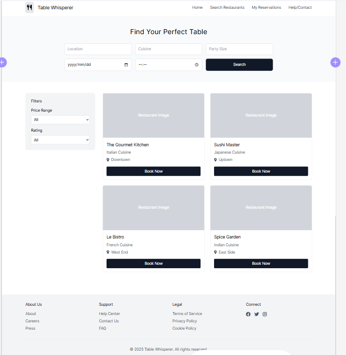

Site Name
Table Whisperer
Reason for Selection: This name is intriguing and suggests an intuitive and almost effortless restaurant reservation experience. "Whisperer" implies a system that understands and manages tables effectively, making the process smooth for both restaurants and diners. It's memorable and brandable.
Optional Domain Availability: tablewhisperer.com
Site Purpose
The purpose of "Table Whisperer" is to be a user-friendly frontend for a restaurant reservation system. It will connect to a backend API (that you've already created) to provide a seamless experience for users to find and book tables at restaurants. The site will:
- Allow users to search for restaurants based on criteria such as cuisine, location, date, time, and party size.
- Display restaurant listings with relevant information (name, cuisine type, location, photos, reviews - if available from backend API).
- Enable users to view restaurant availability and book tables in real-time via interaction with the backend API.
- Provide a user account system (if required by your project scope) to manage reservations, view booking history, and potentially save favorite restaurants.
- Offer a clear and intuitive interface for both desktop and mobile users.
- Potentially include features like filtering, sorting, and map views of restaurants (depending on backend API capabilities and project scope).
Scenarios
Here are two scenarios representing questions a site visitor (a diner) might ask when using "Table Whisperer":
-
Scenario 1: Finding a Restaurant for a Specific Cuisine and Time
Question: "I want to find an Italian restaurant in downtown that has a table available for 4 people this Saturday at 7 PM. How do I search for this?"
Website Solution: The homepage will feature a prominent search bar or search form allowing users to input criteria like cuisine type (Italian), location (downtown), date (Saturday), time (7 PM), and party size (4). The system will then query the backend API and display a list of matching restaurants with availability. Filters and sorting options might be available to refine the search further.
-
Scenario 2: Checking Reservation Details and Confirmation
Question: "I made a reservation through Table Whisperer yesterday. How can I view my reservation details and get confirmation?"
Website Solution: If user accounts are implemented, users can log in to their account and access a "My Reservations" section. This section will display a list of their upcoming and past reservations, with details like restaurant name, date, time, party size, and reservation status (confirmed, pending, etc.). Confirmation information should also be clearly displayed after booking and potentially sent via email (depending on backend API and project scope – email functionality might be backend responsibility).
Color Schema
The color schema selected for "Table Whisperer" aims for a clean, modern, and trustworthy feel, suitable for a reservation platform.
-
Primary Color:
#e07a5f(Salmon Red)- Usage: Headings (H1, H2, H3), primary buttons (e.g., "Book Now"), accents, and potentially for highlighting interactive elements. This color provides a touch of warmth and calls attention to key actions.
-
Secondary Color:
#3d405b(Dark Navy)- Usage: Primary text color for paragraphs, body text, labels in forms, and less emphasized headings. This color offers excellent readability and a sense of professionalism.
-
Background Color:
#f4f1de(Light Cream)- Usage: Main website background color. This provides a soft, neutral, and clean background, allowing content to stand out.
-
Section Background:
#ffffff(White)- Usage: Background for content sections, cards for restaurant listings, and form areas to create clear visual separation and focus on content blocks.
This color palette is designed to be accessible, visually appealing, and inspire confidence in the reservation system.
Typography
The typography for "Table Whisperer" is chosen for readability, modernity, and a clean aesthetic, important for a user-friendly interface.
-
Heading Font: Georgia, serif
- Usage: Used for all headings (H1, H2, H3). Georgia adds a touch of sophistication and readability to titles and section headers.
-
Body Font: Arial, sans-serif
- Usage: Used for body text, paragraphs, lists, form inputs, and general UI text. Arial is a highly legible and clean sans-serif font, ensuring clarity and accessibility across the interface.
This font combination aims for a balance of visual hierarchy and excellent readability, crucial for a functional web application.
Wireframe
Mobile View
Desktop View
The desktop view uses a wider layout to present more information and navigation options directly visible.